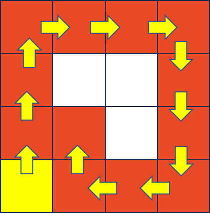

Solo MP This MP, as well as all other MPs in CS 225, are to be completed without a partner.
You are welcome to get help on the MP from course staff, via open lab hours, or Piazza!
Checking Out the Code
From your CS 225 git directory, run the following on EWS:
git fetch release
git merge release/mp_traversals -m "Merging initial mp_traversals files"
If you’re on your own machine, you may need to run:
git fetch release
git merge --allow-unrelated-histories release/mp_traversals -m "Merging initial mp_traversals files"
Upon a successful merge, your mp_traversals files are now in your mp_traversals directory.
Image and Image Traversal
Mathematically, an image can be considered as a function of two variables, f(x, y), where x and y are spatial coordinates and the value of the function at given pair of coordinates (x, y) is called the intensity value.
In the figure below - Values in the grid represent the grayscale intensity of the image on the right. A) Intensity values shown in a grid of same dimension as image. B) Image as seen on monitor
One way to traverse the image is in row first order. Figure below describes this Note that rows are being accessed one after the other. This is known as ‘Row First Traversal’. The graphic suggests that in the current iteration, x = 4 and y = 3 both starting from 0.
Part 1 : Image Traversals
As you learned in lecture, there are many ways to traverse a data structure. In this MP, you will use object-oriented programming techniques to develop classes that traverse an image in a generic way.
Background – Understanding an ImageTraversal
The goal of an ImageTraversal is to create a traversal that starts at some start point and visits every point within some tolerance in a specific order.
For example, consider a “Block I” image that is exactly 6 pixels wide and 7 pixels tall:
One possible traversal of this image is a Row First Traversal, where every pixel in a single row (within a tolerance) is visited before a pixel in any other row is visited. Starting at (2, 3), such a traversal visits every pixel in Row 2 before moving to Row 3 and visited everying pixel in Ro 3 before moving to Row 4:
Two things to note:
- The blue pixels are not visited, because they are outside of a
tolerance - The traversal requires only that all pixels in a row are visited before visiting the next row. Therefore, the order may vary depending on the implementation.
Below are few traversals with iterators (only the pixels within the shape are within the ‘tolerance’ ):
| Entire Image | Rectangle | Circle | Line | Polygon |
|---|---|---|---|---|
 |
||||
| Ellipse | Spiral | |||
Components of an ImageTraversal
ImageTraversal is an abstract class that provides the setup to build a generic traversal library. ImageTraversal contains five pure virtual functions:
ImageTraversal::begin()andImageTraversal::end(), used to return iteratorsImageTraversal::add
Developing an ImageTraversal
Consider a simple image of 16 pixels:
Every ImageTraversal will start at a provided Point. In this image above, suppose we
start in the bottom-left corner (0, 3). The first pixel a traversal will “visit” will
almost always be that starting point (0, 3).
As part of “visiting” a point, a traversal must add all of the neighbors that will be
visited at some time in the future. Every point has up to four neighbors (and the
neighbors MUST be added in the following order):
- The pixel to the right,
(x + 1), - The pixel below,
(y + 1), and - The pixel to the left,
(x - 1). - The pixel above,
(y - 1),
As our starting point (0, 3) is a corner, it has only two neighbors (1, 3) and (0, 2):
After visiting the first point (the starting point), the next point visited is determined
by our ImageTraversal. The logic in add and pop determines the order the nodes are visited.
For example, if we visit the point that was most recently added, we create the following traversal:

Finally, in the image above, only orange pixels were visited. A point must NOT be visited in a traversal if either of the following statements are true:
- The point has already been visited (a traversal never visits the same point twice), OR
- The pixel at the point is greater than or equal to a given
toleranceaway from the pixel at the starting point. The functionImageTraversal::calculateDeltais provided for you to calculate the difference between two pixels.
Part 1a: Create a DFS ImageTraversal
Implement the traversal described above in imageTraversal/DFS.{cpp,h}. It is not necessary to implement the begin and end functions yet.
- Feel free to use a
std::vector,std::list,std::stack, orstd::queueif they would be helpful.
Part 1b: Create a BFS ImageTraversal
Implement the second ImageTraversal, BFS, by visiting the first earliest point that was added that has not yet been visited. It is not necessary to implement the begin and end functions yet.
- Feel free to use a
std::vector,std::list,std::stack, orstd::queueif they would be helpful.
Part 1c: Create the ImageTraversal::Iterator
Finally, create an iterator that uses the ImageTraversals that you have built. You need only to create the simplest of all the iterators – a forward iterator – which requires three operations:
operator*, to access the current Point in the image traversaloperator++, to advance to the next Point in our image traversaloperator!=, to check if two iterators are different
A call to DFS::begin() or BFS::begin() must return an ImageTraversal::Iterator that starts at the starting point
(eg: *(dfs.begin()) == startingPoint) and must move through the traversal you created in parts 1a and 1b.
As you work through this:
- You may assume the
PNGimage will not change after your object is created. - Iterators must be independent (moving one iterator forward does not change other instances of an iterator).
- There are at least four very different ways to build your iterator. You may need to create a copy of your entire
BFSorDFSobject within your iterator, this is okay. - Remember that
begin()returns an iterator at the starting point, butend()returns an iterator one past the end. - It is common for
end()to be a sentinel value (eg: aNULLpointer, etc). It should not be necessary to run through the full traversal to get to one past the end.
Finally, simple test cases for this part can be run with the following command:
make test
./test [part=1]
Optional test cases We’ve included some additional test cases in tests/tests-part1-BFS-DFS.cpp.
These tests are worth 0 points and will not affect your grade.
If you feel particularly lost, you can use these test cases to help guide you
towards one of the possible ways of implementing this MP. However, if you want
to do things in a different way that doesn’t pass these tests, you can safely
ignore them, or even comment them out entirely!
Extra Credit Submission
For extra credit, you can submit the code you have implemented and tested for mp_traversals, Part 1. You must submit your work before the extra credit deadline as listed at the top of this page. Follow the handin instructions given at the bottom of this page.
Part 2 (Curated): Flood Fill
In this MP, you will be flood-filling an image using a ColorPicker and an ImageTraversal. You built ImageTraversal classes in Part 1 and we have provided some ColorPicker classes for you (including RainbowColorPicker, SolidColorPicker, and others).
The FloodFilledImage class outlines the three member functions you must implement for this part.
- Feel free to use a
std::vector,std::list,std::stack, orstd::queueif they would be helpful.
Part 3 (Creative): Your Flood Fill!
Finally, time to be creative with what you built! Two seperate things are required:
-
Create a new color picker called
MyColorPicker, found in thecolorPickerfolder. This picker may be anything, but must be different than the color pickers we provided. -
Modify
main.cppto create aFloodFilledImageusing at least two flood fill operations (two calls toaddFloodFill). Yourmain.cppmust save the last frame asmyFloodFill.png.
If you share your art on Facebook, Twitter, or Instagram with #cs225, I will or the post as soon as I see it. I think many of your peers will too! — Wade
Testing
ImageMagick Note that you must have ImageMagick installed if you’re developing on your personal machine. You can test for this requirement by running
convert
in your terminal. Windows users should visit ImageMagick to download the latest binary. OSX users can use homebrew or MacPorts to install it if missing. Linux users likely already have it installed. If not, then you can install it via your system’s package manager.
To run all of the tests for this MP:
make test
./test
Grading Information
The following files are used to grade mp_traversals:
imageTraversal/BFS.cpp(Part 1)imageTraversal/BFS.h(Part 1)imageTraversal/DFS.cpp(Part 1)imageTraversal/DFS.h(Part 1)imageTraversal/ImageTraversal.cpp(Part 1)imageTraversal/ImageTraversal.h(Part 1)FloodFilledImage.cpp(Part 2)FloodFilledImage.h(Part 2)colorPicker/MyColorPicker.cpp(Part 3)colorPicker/MyColorPicker.h(Part 3)main.cpp(Part 3)myFloodFill.png(Part 3)
All other files including any testing files you have added will not be used for grading.